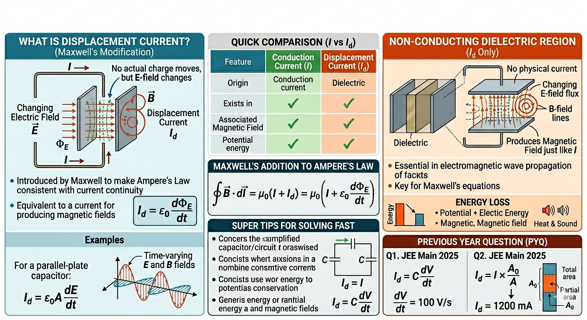

Displacement Current: Concept, Examples, and Shortcuts

Image generated by Google AI
What Is Displacement Current?
Imagine you are charging your phone. You plug in the charger, and current flows through the wire. Simple, right? Charges move, energy flows, battery fills.
Now imagine something stranger. Inside that charger, there are tiny regions (like capacitors) where no charge actually jumps across a gap, yet the circuit still works as if current is flowing continuously. No breaks. No interruptions. No confusion… except there should be one.
This is exactly where physics once got stuck, and where Maxwell had a brilliant insight.
Displacement current is a concept introduced by James Clerk Maxwell to modify Ampere’s law and make it consistent with the continuity equation of current in situations involving time-varying electric fields.
Traditional current involves the movement of charges through a conductor. However, in a capacitor during charging or discharging, no actual charges move across the gap between plates, yet there exists a changing electric field. Maxwell proposed the idea of displacement current to account for this effect.
Now think, if current “stops” at one plate and magically “reappears” at the other, wouldn’t that violate conservation of charge? Exactly. Nature doesn’t allow such discontinuities.
This leads to a deeper principle called the continuity equation:
\[ \nabla \cdot \vec{J} + \frac{\partial \rho}{\partial t} = 0 \]
Maxwell realized that a changing electric field itself must act like a current to preserve this law.
The displacement current \( I_d \) is not a real movement of charges, but it produces magnetic fields just like conduction current. It is defined as:
\[ I_d = \epsilon_0 \frac{d\Phi_E}{dt} \]
where \( \Phi_E \) is the electric flux and \( \epsilon_0 \) is the permittivity of free space.
Subtle Insight: Displacement current is not “fake”—it is just not made of moving charges. It is a changing field behaving dynamically like current.
Modified Ampere's Law (Maxwell's Addition)
Let us revisit Ampere’s law with a curious situation.
If you draw a loop around a wire connected to a charging capacitor, depending on the surface you choose, you may or may not “see” current passing through it. That’s a contradiction, physics laws cannot depend on your imagination!
Maxwell resolved this beautifully.
Maxwell modified Ampere’s Law to include displacement current:
\[ \oint \vec{B} \cdot d\vec{l} = \mu_0 \left( I + I_d \right) = \mu_0 \left( I + \epsilon_0 \frac{d\Phi_E}{dt} \right) \]
This correction allows Ampere’s Law to apply in all cases, including capacitors in AC circuits, and is essential for the formulation of Maxwell’s equations.
Deep Connection: This single correction leads to one of the greatest discoveries in physics, the existence of electromagnetic waves.
Combining Maxwell’s equations gives:
\[ c = \frac{1}{\sqrt{\mu_0 \epsilon_0}} \]
This predicts that light itself is an electromagnetic wave.
Common Misunderstanding: Many students think displacement current is only a “capacitor concept.” In reality, it is fundamental to all time-varying electromagnetic phenomena, including radio waves, light, and signals in circuits.
Key Formula
Now let us connect everything mathematically.
\[ I_d = \epsilon_0 \frac{d\Phi_E}{dt} = \epsilon_0 \frac{d}{dt} \left( \int \vec{E} \cdot d\vec{A} \right) \]
Where:
- \( I_d \): Displacement current
- \( \epsilon_0 = 8.85 \times 10^{-12} \, \text{F/m} \): Permittivity of free space
- \( \Phi_E \): Electric flux
- \( \vec{E} \): Electric field
Useful Derived Form: For uniform electric field over area:
\[ \Phi_E = EA \Rightarrow I_d = \epsilon_0 A \frac{dE}{dt} \]
Another Important Relation: Using capacitance:
\[ I_d = C \frac{dV}{dt} \]
This form is extremely useful in numerical problems.
Shortcut Concepts
- In a charging capacitor, \( I_d = I \) at any instant.
- Displacement current exists in the region between capacitor plates.
- It contributes to the magnetic field just like conduction current.
- Essential in electromagnetic wave propagation (time-varying \( E \) and \( B \) fields).
Quick Intuition Trick: If electric field is changing → displacement current must exist.
Exam Trap: Students often forget that displacement current depends on \( \frac{dE}{dt} \), not just \( E \). A constant electric field produces no displacement current.
Examples
- A capacitor with plate area \( A \) and electric field increasing at a rate \( \frac{dE}{dt} \):
- A parallel-plate capacitor has \( \epsilon_0 = 8.85 \times 10^{-12} \), area \( A = 0.01 \, \text{m}^2 \), and \( \frac{dE}{dt} = 10^6 \, \text{V/m/s} \):
- In an RC circuit during charging:
\[ I_d = \epsilon_0 A \frac{dE}{dt} \]
\[ I_d = 8.85 \times 10^{-12} \times 0.01 \times 10^6 = 8.85 \times 10^{-8} \, \text{A} \]
\[ I = I_d = \frac{V_0}{R} e^{-t/RC} \]
Observation: Even though no charge crosses the capacitor gap, current in the wire and “current” in the gap are always equal. This ensures continuity.
Concept Questions with Explanations
- Why was displacement current introduced?
To maintain continuity in Ampere's law where no physical current exists, like between capacitor plates. - Does displacement current create a magnetic field?
Yes, just like conduction current. - In which region does only displacement current exist?
Between the plates of a capacitor (non-conducting dielectric region). - What is the unit of displacement current?
Same as conduction current, Amperes (A). - Is displacement current a real current?
No; it does not involve movement of actual charges but results from changing electric fields.
Extra Conceptual Twist: In electromagnetic waves, there are no charges moving through space, yet energy propagates. That is pure displacement current in action.
Super Tips for Solving Fast
- Use \( I_d = \epsilon_0 A \frac{dE}{dt} \) when electric field variation is known.
- In capacitors, always equate displacement current to conduction current.
- Treat displacement current just like real current for magnetic field effects.
- Keep units consistent, especially for area (m²) and field (V/m).
Speed Hack: If capacitance is given, immediately switch to \( I_d = C \frac{dV}{dt} \) — it saves time.
Previous Year Questions (PYQs)
Q1. A time-varying potential difference is applied between the plates of a parallel-plate capacitor of capacitance \(2.5\,\mu\text{F}\). The dielectric constant of the medium between the plates is 1. If it produces an instantaneous displacement current of \(0.25\,\text{mA}\), the magnitude of the rate of change of the potential difference will be ______ V/s. (JEE Main 2025)
Solution:
\[ I_d = C \frac{dV}{dt} \Rightarrow \frac{dV}{dt} = \frac{I_d}{C} \]
Substituting the values:
\[ \frac{dV}{dt} = \frac{0.25 \times 10^{-3}}{2.5 \times 10^{-6}} = 100 \, \text{V/s} \]
Answer: \( \boxed{100 \, \text{V/s}} \)
Q2. A parallel plate capacitor of area \(A = 16 \, \text{cm}^2\) and separation \(d = 10 \, \text{cm}\), is charged by a DC current. Consider a hypothetical plane surface of area \(A_0 = 3.2 \, \text{cm}^2\) inside the capacitor and parallel to the plates. At an instant, the current through the circuit is \(6\,\text{A}\). At the same instant, the displacement current through \(A_0\) is ______ mA. (JEE Main 2025)
Solution:
The total displacement current between the plates is equal to the conduction current:
\[ I_d^{\text{total}} = I = 6\,\text{A} \]
Displacement current through the smaller area \(A_0\) is proportional to its area:
\[ I_d = I \times \frac{A_0}{A} \]
Converting areas to consistent units:
\[ \frac{A_0}{A} = \frac{3.2}{16} = 0.2 \]
Thus:
\[ I_d = 6 \times 0.2 = 1.2\,\text{A} = 1200\,\text{mA} \]
Answer: \( \boxed{1200 \, \text{mA}} \)